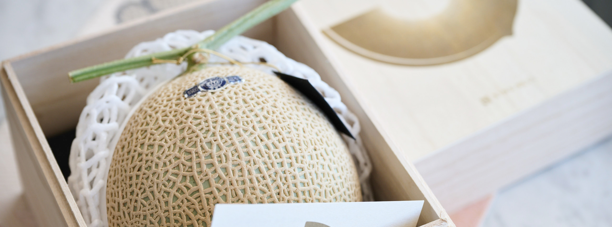
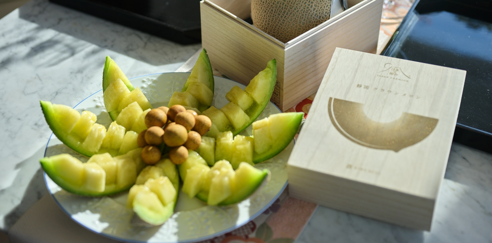
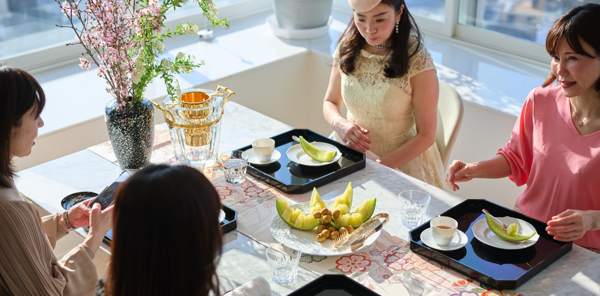

「日本の極み」を使ったホームパーティー
5
（デザート）メロン
パーティーの最後を飾るのはデザートのメロン。
マスクメロンのなかでも、最高の名を冠せられている「クラウンメロン」は、メロン栽培のために開発した「隔離ベッド」と呼ばれる人工栽培床で育成し、太陽光線の透過率が高いガラス温室で栽培しています。この栽培法は土壌や水、肥料、温度、湿度などを緻密に管理することが可能。しかも、１株に１果だけ残してほかを摘み取り、ひとつの実にすべての養分が集中するよう育てられます。

- 内田みち代 さん
- こちらのメロン、番号付きでした（笑）。番号をネットで調べると生産者さんもわかるんですよ！
熟れるまでちょっと置いてありまして、私はこれくらいが好きですね。中央にはライチを添えてみました。 - 松野エリカ さん
- メロンはどれくらい置いたんですか？
- 内田みち代 さん
- 届いてから一週間くらい。押すとペコッと凹みます（笑）。
- 松野エリカ さん
- 甘い！！
- 壁谷玲子 さん
- ん！
- 内田みち代 さん
- んん！ ちょっとスゴい！
- 酒匂ひろ子 さん
- すぐ無くなっちゃいますね、とってもジューシィ！
- 松野エリカ さん
- うんうん、一瞬で無くなって溶けてしまったみたい！ 恥ずかしいくらいすぐ無くなっちゃう。
- 壁谷玲子 さん
- （「日本の極み」には、ご提供した「クラウンメロン （シルバー）」よりも上のランク、ゴールド、プラチナがあると聞いて）
これ以上、何が変わるんでしょう（笑）。 - 内田みち代 さん
- これ以上ないよね（笑）。

- 内田みち代 さん
- 皆さん、これをお菓子にされるならどうですか？ 私はシャーベットくらいしか思いつかないですけど。
- 酒匂ひろ子 さん
- ゼリーも美味しそうですね…。
- 松野エリカ さん
- タルト、に乗せたいけど水分多いでしょうか…。
- 壁谷玲子 さん
- なんだかもったいないよね。
- 松野エリカ さん
- 使いたくない（笑）。
- 一同
- （笑）
- 内田みち代 さん
- 今まで食べたなかでいちばんのメロンでした。